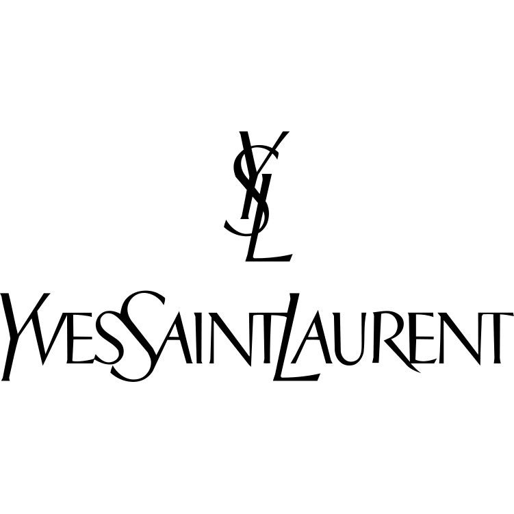
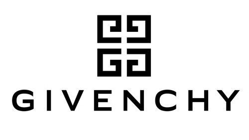
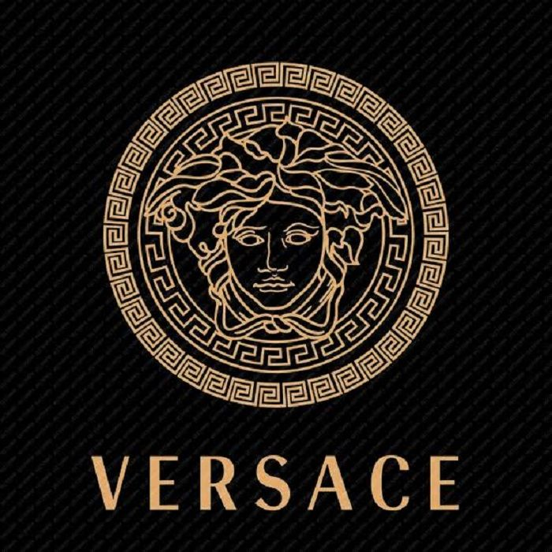
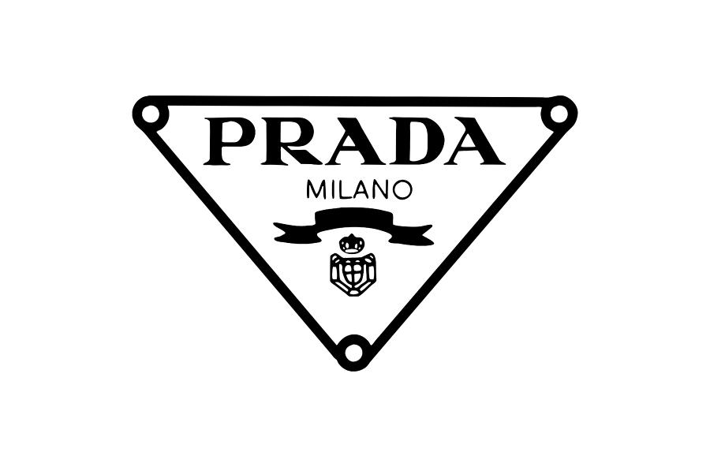
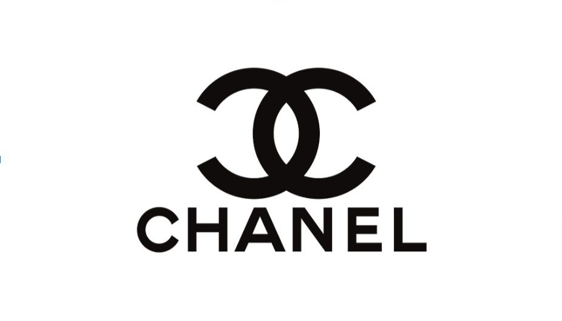

Mundo da moda
A Yves Saint Laurent é uma das grifes de moda mais famosas do planeta que, além de se dedicar à produção de roupas, também oferece acessórios bem bonitos e de qualidade, como os óculos de sol e os óculos de grau. .

A história da casa Givenchy começou em 1952, quando Hubert de Givenchy, descendente de uma família aristocrata francesa, decidiu criar a sua própria casa de alta costura.

Versace é uma famosa marca italiana de moda de luxo fundada em 1978 por Gianni Versace. Após o assassinato de Gianni em 1997, a sua irmã, Donatella Versace

Prada é uma marca italiana de moda, considerada um símbolo de luxo e status. No início de sua história, a grife era especializada em malas de viagem, bolsas e artigos de couro

Chanel é uma casa de moda francesa de luxo fundada em 1910 por Coco Chanel em Paris. A Chanel é especializada em pronto-a-vestir feminino, produtos de luxo e acessórios e licencia seu nome e marca à Luxottica para óculos

Christian Dior SE mais conhecida por Dior, é uma empresa francesa sediada em Paris, que detém o produtor e distribuidor de moda Christian Dior Couture, bem como 42% da empresa LVMH Moët Hennessy Louis Vuitton, a maior empresa mundial do sector do luxo